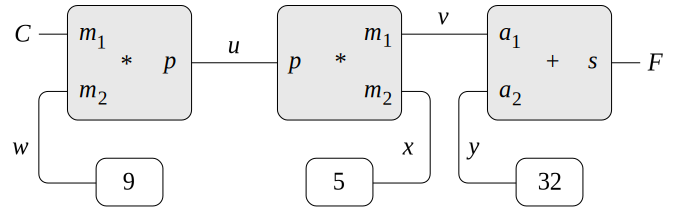

Computer programs are traditionally organized as
one-directional computations, which perform operations on prespecified
arguments to produce desired outputs. On the other hand, we often
model systems in terms of relations among quantities. For example, a
mathematical model of a mechanical structure might include the
information that the deflection $d$ of a metal
rod is related to the force $F$ on the rod, the
length $L$ of the rod, the cross-sectional
area $A$, and the elastic modulus
$E$ via the equation
\[
\begin{array}{lll}
d A E & = & F L
\end{array}
\]
Such an equation is not one-directional. Given any four of the
quantities, we can use it to compute the fifth. Yet translating the
equation into a traditional computer language would force us to choose
one of the quantities to be computed in terms of the other four.
Thus, a
procedurefunction
for computing the area $A$ could not be used to
compute the deflection $d$, even though the
computations of $A$ and
$d$ arise from the same
equation.[1]
In this section, we sketch the design of a language that enables us to work
in terms of
relations themselves. The primitive elements of the language
are
primitive constraints, which state that certain relations hold
between quantities. For example,
(adder a b c)adder(a, b, c)
specifies that the quantities $a$,
$b$, and $c$ must be
related by the equation $a+b=c$,
(multiplier x y z)multiplier(x, y, z)
expresses the constraint $xy = z$, and
(constant 3.14 x)constant(3.14, x)
says that the value of $x$ must be 3.14.
Our language provides a means of combining primitive constraints in order to
express more complex relations. We combine constraints by constructing
constraint networks, in which constraints are joined by
connectors. A connector is an object that holds a
value that may participate in one or more constraints. For example, we know
that the relationship between Fahrenheit and Celsius temperatures is
\[
\begin{array}{lll}
9C & = & 5(F - 32)
\end{array}
\]
Such a constraint can be thought of as a network consisting of primitive
adder, multiplier, and constant constraints
(figure 3.51). In the figure, we see on the
left a multiplier box with three terminals, labeled
$m_1$, $m_2$, and
$p$. These connect the multiplier to the rest of
the network as follows:
The $m_1$ terminal is linked to a connector
$C$, which will hold the Celsius temperature.
The $m_2$ terminal is linked to a connector
$w$, which is also linked to a constant box that
holds 9. The $p$ terminal, which the multiplier
box constrains to be the product of $m_1$ and
$m_2$, is linked to the
$p$ terminal of another multiplier box, whose
$m_2$ is connected to a constant 5 and whose
$m_1$ is connected to one of the terms in a sum.

Figure 3.51 The relation $9C = 5(F - 32)$
expressed as a constraint network.
Computation by such a network proceeds as follows: When a connector is
given a value (by the user or by a constraint box to which it is
linked), it awakens all of its associated constraints (except for the
constraint that just awakened it) to inform them that it has a value.
Each awakened constraint box then polls its connectors to see if there
is enough information to determine a value for a connector. If so,
the box sets that connector, which then awakens all of its associated
constraints, and so on. For instance, in conversion between
Celsius and Fahrenheit, $w$,
$x$, and $y$ are
immediately set by the constant boxes to $9$, $5$, and $32$, respectively. The
connectors awaken the multipliers and the adder, which determine that there
is not enough information to proceed. If the user (or some other part of
the network) sets $C$ to a value (say 25), the
leftmost multiplier will be awakened, and it will set
$u$ to $25\cdot 9=225$.
Then $u$ awakens the second multiplier, which sets
$v$ to $45$, and $v$
awakens the adder, which sets $F$ to $77$.
Using the constraint system
Original
JavaScript
To use the constraint system to carry out the temperature computation
outlined above, we first create two connectors,
C and F, by
calling the constructor
make-connector, and link
C and F
in an appropriate network:
To use the constraint system to carry out the temperature computation
outlined above, we first call the constructor
make_connector
to create two connectors,
C and F,
and then link them in an appropriate network:
Original
JavaScript
(define C (make-connector))
(define F (make-connector))
(celsius-fahrenheit-converter C F)
ok
const C = make_connector();
const F = make_connector();
celsius_fahrenheit_converter(C, F);
"ok"
The
procedurefunction
that creates the network is defined as follows:
Original
JavaScript
(define (celsius-fahrenheit-converter c f)
(let ((u (make-connector))
(v (make-connector))
(w (make-connector))
(x (make-connector))
(y (make-connector)))
(multiplier c w u)
(multiplier v x u)
(adder v y f)
(constant 9 w)
(constant 5 x)
(constant 32 y)
'ok))
function celsius_fahrenheit_converter(c, f) {
const u = make_connector();
const v = make_connector();
const w = make_connector();
const x = make_connector();
const y = make_connector();
multiplier(c, w, u);
multiplier(v, x, u);
adder(v, y, f);
constant(9, w);
constant(5, x);
constant(32, y);
return "ok";
}
This
procedurefunction
creates the internal connectors u,
v, w,
x, and y, and
links them as shown in figure 3.51 using the
primitive constraint constructors adder,
multiplier, and
constant. Just as with the digital-circuit
simulator of section 3.3.4, expressing
these combinations of primitive elements in terms of
proceduresfunctions
automatically provides our language with a means of abstraction for compound
objects.
To watch the network in action, we can place probes on the connectors
C and F, using a
probeprocedurefunction
similar to the one we used to monitor wires in
section 3.3.4. Placing a probe on a
connector will cause a message to be printed whenever the connector is
given a value:
Original
JavaScript
(probe "Celsius temp" C)
(probe "Fahrenheit temp" F)
The probe on C awakens and reports the value.
C also
propagates its value through the network as described above. This
sets F to 77, which is reported by the probe
on F.
Now we can try to set F to a new value, say 212:
Original
JavaScript
(set-value! F 212 'user)
Error! Contradiction (77 212)
The connector complains that it has sensed a contradiction: Its value
is 77, and someone is trying to set it to 212. If we really want to
reuse the network with new values, we can tell
C to forget its old value:
C finds that the
user,
"user",
who set its value originally, is now retracting that value, so
C agrees to lose its value, as shown by the
probe, and informs the rest of the network of this fact. This information
eventually propagates to F, which now finds
that it has no reason for continuing to believe that its own
value is 77. Thus, F also
gives up its value, as shown by the probe.
Now that F has no value, we are free to set it
to 212:
This new value, when propagated through the network, forces
C to have a value of 100, and this is
registered by the probe on C. Notice that the
very same network is being used to compute C
given F and to compute
F given C.
This nondirectionality of computation is the distinguishing feature of
constraint-based systems.
Implementing the constraint system
The constraint system is implemented via procedural objects with local
state, in a manner very similar to the digital-circuit simulator of
section 3.3.4. Although the primitive
objects of the constraint system are somewhat more complex, the overall
system is simpler, since there is no concern about agendas and logic delays.
The basic
operations on connectors are the following:
(has-value? connector):has_value($connector$)
tells whether the connector has a value.
(get-value connector):get_value($connector$)
returns the connector's current value.
(set-value! connector new-value informant):
set_value($connector$, $new$-$value$, $informant$)
indicates that the informant is requesting the connector to set its
value to the new value.
(forget-value! connector retractor):
forget_value($connector$, $retractor$)
tells the connector that the retractor is requesting it to forget its
value.
(connect connector new-constraint):
connect($connector$, $new$-$constraint$)
tells the connector to participate in the new constraint.
The connectors communicate with the constraints by means of the
proceduresfunctionsinform-about-value,
inform_about_value,
which tells the given constraint that the connector has a value, and
inform-about-no-value,inform_about_no_value,
which tells the constraint that the connector has lost its value.
Adder constructs an adder constraint among
summand connectors a1 and
a2 and a sum
connector. An adder is implemented as a
procedurefunction
with local state (the
procedurefunctionme below):
function adder(a1, a2, sum) {
function process_new_value() {
if (has_value(a1) && has_value(a2)) {
set_value(sum, get_value(a1) + get_value(a2), me);
} else if (has_value(a1) && has_value(sum)) {
set_value(a2, get_value(sum) - get_value(a1), me);
} else if (has_value(a2) && has_value(sum)) {
set_value(a1, get_value(sum) - get_value(a2), me);
} else {}
}
function process_forget_value() {
forget_value(sum, me);
forget_value(a1, me);
forget_value(a2, me);
process_new_value();
}
function me(request) {
if (request === "I have a value.") {
process_new_value();
} else if (request === "I lost my value.") {
process_forget_value();
} else {
error(request, "unknown request -- adder");
}
}
connect(a1, me);
connect(a2, me);
connect(sum, me);
return me;
}
Adder
The function adder
connects the new adder to the designated
connectors and returns it as its value. The
procedurefunctionme, which represents the adder, acts as a
dispatch to the local
procedures.functions.
The following
syntax interfaces (see
footnote 2 in
section 3.3.4) are used in conjunction
with the dispatch:
function inform_about_value(constraint) {
return constraint("I have a value.");
}
function inform_about_no_value(constraint) {
return constraint("I lost my value.");
}
The adder's local
procedurefunctionprocess-new-valueprocess_new_value
is called when the adder is informed that one of its connectors has a value.
The adder first checks to see if both a1 and
a2 have values. If so, it tells
sum to set its value to the sum of the two
addends. The informant argument to
set-value!set_value
is me, which is the adder object itself. If
a1 and a2 do not
both have values, then the adder checks to see if perhaps
a1 and sum have
values. If so, it sets a2 to the difference of
these two. Finally, if a2 and
sum have values, this gives the adder enough
information to set a1. If the adder is told
that one of its connectors has lost a value, it requests that all of its
connectors now lose their values. (Only those values that were set by
this adder are actually lost.) Then it runs
process-new-value.process_new_value.
The reason for this last step is that one or more connectors may still
have a value (that is, a connector may have had a value that was not
originally set by the adder), and these values may need to be
propagated back through the adder.
A multiplier is very similar to an adder. It will set its
product to 0 if either of the factors is 0,
even if the other factor is not known.
function multiplier(m1, m2, product) {
function process_new_value() {
if ((has_value(m1) && get_value(m1) === 0)
|| (has_value(m2) && get_value(m2) === 0)) {
set_value(product, 0, me);
} else if (has_value(m1) && has_value(m2)) {
set_value(product, get_value(m1) * get_value(m2), me);
} else if (has_value(product) && has_value(m1)) {
set_value(m2, get_value(product) / get_value(m1), me);
} else if (has_value(product) && has_value(m2)) {
set_value(m1, get_value(product) / get_value(m2), me);
} else {}
}
function process_forget_value() {
forget_value(product, me);
forget_value(m1, me);
forget_value(m2, me);
process_new_value();
}
function me(request) {
if (request === "I have a value.") {
process_new_value();
} else if (request === "I lost my value.") {
process_forget_value();
} else {
error(request, "unknown request -- multiplier");
}
}
connect(m1, me);
connect(m2, me);
connect(product, me);
return me;
}
A constant constructor simply sets the value of
the designated connector. Any
I-have-a-value"I have a value."
or
I-lost-my-value"I lost my value."
message sent to the constant box will produce an error.
function probe(name, connector) {
function print_probe(value) {
display("Probe: " + name + " = " + stringify(value));
}
function process_new_value() {
print_probe(get_value(connector));
}
function process_forget_value() {
print_probe("?");
}
function me(request) {
return request === "I have a value."
? process_new_value()
: request === "I lost my value."
? process_forget_value()
: error(request, "unknown request -- probe");
}
connect(connector, me);
return me;
}
Representing connectors
A connector is represented as a procedural object with local state variables
value, the current value of the connector;
informant, the object that set the
connector's value; and constraints,
a list of the constraints in which the connector participates.
function make_connector() {
let value = false;
let informant = false;
let constraints = null;
function set_my_value(newval, setter) {
if (!has_value(me)) {
value = newval;
informant = setter;
return for_each_except(setter,
inform_about_value,
constraints);
} else if (value !== newval) {
error(list(value, newval), "contradiction");
} else {
return "ignored";
}
}
function forget_my_value(retractor) {
if (retractor === informant) {
informant = false;
return for_each_except(retractor,
inform_about_no_value,
constraints);
} else {
return "ignored";
}
}
function connect(new_constraint) {
if (is_null(member(new_constraint, constraints))) {
constraints = pair(new_constraint, constraints);
} else {}
if (has_value(me)) {
inform_about_value(new_constraint);
} else {}
return "done";
}
function me(request) {
if (request === "has_value") {
return informant !== false;
} else if (request === "value") {
return value;
} else if (request === "set_value") {
return set_my_value;
} else if (request === "forget") {
return forget_my_value;
} else if (request === "connect") {
return connect;
} else {
error(request, "unknown operation -- connector");
}
}
return me;
}
The connector's local
procedurefunctionset-my-valueset_my_value
is called when there is a request to set the connector's value. If
the connector does not currently have a value, it will set its value and
remember as informant the constraint that
requested the value to be set.[2] Then the connector will
notify all of its participating constraints except the constraint that
requested the value to be set. This is accomplished using the following
iterator, which applies a designated
procedurefunction
to all items in a list except a given one:
function for_each_except(exception, fun, list) {
function loop(items) {
if (is_null(items)) {
return "done";
} else if (head(items) === exception) {
return loop(tail(items));
} else {
fun(head(items));
return loop(tail(items));
}
}
return loop(list);
}
If a connector is asked to forget its value, it runs
the local procedure
forget-my-value,
which
forget_my_value,
a local function that
first checks to make sure that the request is coming from the same
object that set the value originally. If so, the connector informs its
associated constraints about the loss of the value.
The local
procedurefunctionconnect adds the designated new constraint
to the list of constraints if it is not already in that
list.[3]
Then, if the connector has a value, it informs the new constraint of this
fact.
The connector's
procedurefunctionme serves as a dispatch to the other internal
proceduresfunctions
and also represents the connector as an object. The following
proceduresfunctions
provide a syntax interface for the dispatch:
function has_value(connector) {
return connector("has_value");
}
function get_value(connector) {
return connector("value");
}
function set_value(connector, new_value, informant) {
return connector("set_value")(new_value, informant);
}
function forget_value(connector, retractor) {
return connector("forget")(retractor);
}
function connect(connector, new_constraint) {
return connector("connect")(new_constraint);
}
Exercise 3.33
Using primitive multiplier, adder, and constant constraints, define a
procedurefunctionaverager that takes three connectors
a, b,
and c as inputs and establishes the
constraint that the value of
c is the average of the values of
a and b.
Original
JavaScript
(define (averager a b c)
(let ((v (make-connector))
(s (make-connector)))
(adder a b s)
(multiplier v c s)
(constant 2 v)
'ok
))
// (a+b)/2 = c is same as a+b = 2*c = s
function averager(a, b, c){
const s = make_connector();
const v = make_connector();
constant(2, v);
multiplier(v, c, s);
adder(a, b, s);
}
Exercise 3.34
Louis Reasoner wants to build a
squarer, a constraint device with two
terminals such that the value of connector
b on the second
terminal will always be the square of the value
a on the first
terminal. He proposes the following simple device made from a
multiplier:
Original
JavaScript
(define (squarer a b)
(multiplier a a b))
function squarer(a, b) {
return multiplier(a, a, b);
}
There is a serious flaw in this idea. Explain.
There is currently no solution available for this exercise. This textbook adaptation is a community effort. Do consider contributing by providing a solution for this exercise, using a Pull Request in Github.
Exercise 3.35
Ben Bitdiddle tells Louis that one way to avoid the trouble in
exercise 3.34 is to define a
squarer as a new primitive constraint. Fill in the missing
portions in Ben's outline for a
procedurefunction
to implement such a constraint:
Original
JavaScript
(define (squarer a b)
(define (process-new-value)
(if (has-value? b)
(if (< (get-value b) 0)
(error "square less than 0 - - SQUARER" (get-value b))
$\langle alternative1\rangle$)
$\langle alternative2 \rangle$))
(define (process-forget-value) $\langle body1 \rangle$)
(define (me request) $\langle body2 \rangle$)
$\langle rest\ of\ definition\rangle$
me)
function squarer(a, b) {
function process_new_value() {
if (has_value(b)) {
if (get_value(b) < 0) {
error(get_value(b), "square less than 0 -- squarer");
} else {
$alternative_1$
}
} else {
$alternative_2$
}
}
function process_forget_value() {
$body_1$
}
function me(request) {
$body_2$
}
$statements$
return me;
}
There is currently no solution available for this exercise. This textbook adaptation is a community effort. Do consider contributing by providing a solution for this exercise, using a Pull Request in Github.
Exercise 3.36
Suppose we evaluate the following sequence of
expressions
statements
in the
globalprogram
environment:
Original
JavaScript
(define a (make-connector))
(define b (make-connector))
(set-value! a 10 'user)
const a = make_connector();
const b = make_connector();
set_value(a, 10, "user");
At some time during evaluation of the
set-value!,set_value,
the following expression from the connector's local
procedurefunction
is evaluated:
Draw an environment diagram showing the environment in which the above
expression is evaluated.
There is currently no solution available for this exercise. This textbook adaptation is a community effort. Do consider contributing by providing a solution for this exercise, using a Pull Request in Github.
Exercise 3.37
The
celsius-fahrenheit-convertercelsius_fahrenheit_converterprocedurefunction
is cumbersome when
compared with a more expression-oriented style of definition, such as
Original
JavaScript
(define (celsius-fahrenheit-converter x)
(c+ (c* (c/ (cv 9) (cv 5))
x)
(cv 32)))
(define C (make-connector))
(define F (celsius-fahrenheit-converter C))
function celsius_fahrenheit_converter(x) {
return cplus(cmul(cdiv(cv(9), cv(5)), x), cv(32));
}
const C = make_connector();
const F = celsius_fahrenheit_converter(C);
Here
c+,cplus,c*,cmul,
etc. are the constraint
versions of the arithmetic operations. For example,
c+cplus
takes two connectors as arguments and returns a connector that is
related to these by an adder constraint:
Original
JavaScript
(define (c+ x y)
(let ((z (make-connector)))
(adder x y z)
z))
function cplus(x, y) {
const z = make_connector();
adder(x, y, z);
return z;
}
Define analogous
proceduresfunctionsc-,cminus,c*,cmul,c/,cdiv,
and
cv
(constant value) that enable us to define compound constraints as in
the converter example above.[4]
// Solution provided by GitHub user clean99
function cminus(x, y) {
const z = make_connector();
const u = make_connector();
const v = make_connector();
constant(-1, u);
multiplier(u, y, v);
adder(x, v, z);
return z;
}
function cmul(x, y) {
const z = make_connector();
multiplier(x, y, z);
return z;
}
function cdiv(x, y) {
const z = make_connector();
const u = make_connector();
const v = make_connector();
constant(1, v);
// y * u = 1 -> u = 1 / y
multiplier(y, u, v);
multiplier(x, u, z);
return z;
}
function cv(val) {
const x = make_connector();
constant(val, x);
return x;
}
[1]
Constraint propagation first appeared in the incredibly
forward-looking
SKETCHPAD system of
Ivan Sutherland (1963). A beautiful constraint-propagation system based
on the
Smalltalk language was developed by
Alan Borning (1977) at
Xerox Palo Alto Research Center. Sussman, Stallman, and Steele
applied constraint propagation to electrical circuit analysis
(Sussman and Stallman 1975;
Sussman and Steele 1980).
TK!Solver
(Konopasek and Jayaraman 1984)
is an extensive modeling environment based on constraints.
[2]
The
setter might not be a constraint. In our
temperature example, we used
user"user"
as the
setter.
[3]
We can use the function
member
from section 2.3.1
to test whether
new_constraint is already in
constraints,
although
member was introduced
as being limited to numbers and strings, because
we extended
=== to pointer equality in
section 3.3.1.
[4]
The
expression-oriented format
is convenient because it avoids the need to name the intermediate
expressions in a computation. Our original formulation of the
constraint language is cumbersome in the same way that many languages
are cumbersome when dealing with operations on compound data. For
example, if we wanted to compute the product
${(a+b)}\cdot{(c+d)}$, where the
variables represent vectors, we could work in
imperative style,
using
proceduresfunctions
that set the values of designated vector arguments
but do not themselves return vectors as values:
Original
JavaScript
(v-sum a b temp1)
(v-sum c d temp2)
(v-prod temp1 temp2 answer)
Alternatively, we could deal with expressions, using
proceduresfunctions
that return vectors as values, and thus avoid
explicitly mentioning temp1 and
temp2:
Since
LispJavaScript
allows us to return compound objects as values of
procedures,functions,
we can transform our imperative-style constraint language
into an expression-oriented style as shown in this exercise.
In languages that are impoverished in handling compound objects, such
as
Algol, Basic, and Pascal (unless one explicitly uses Pascal pointer
variables), one is usually stuck with the imperative style when
manipulating compound objects.
Given the advantage of the
expression-oriented format, one might ask if there is any reason to
have implemented the system in imperative style, as we did in this
section. One reason is that the non-expression-oriented constraint
language provides a handle on constraint objects (e.g., the value of
the adderprocedure)function)
as well as on connector objects. This is
useful if we wish to extend the system with new operations that
communicate with constraints directly rather than only indirectly via
operations on connectors. Although it is easy to implement the
expression-oriented style in terms of the imperative implementation,
it is very difficult to do the converse.